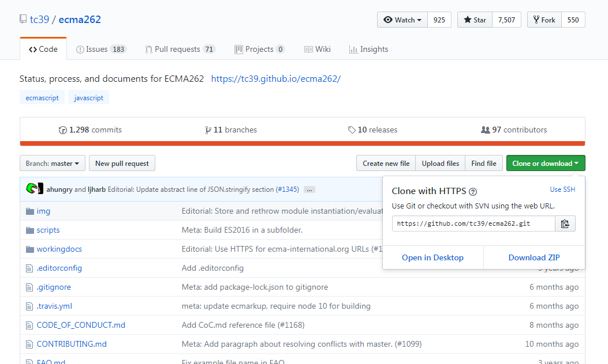
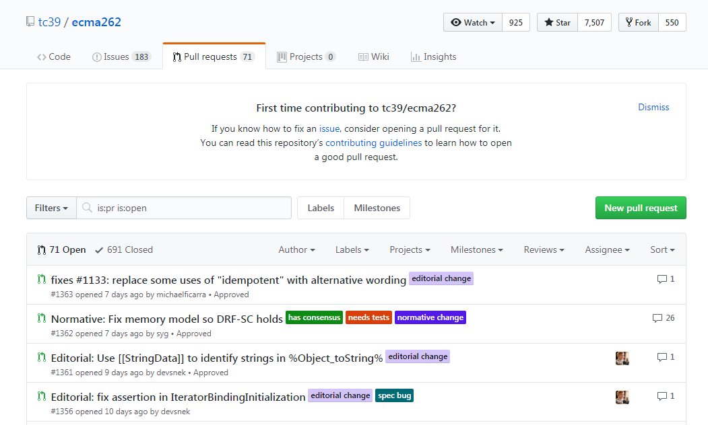

Git is a version control system
After creating somefile.txt in the project directory:
Use 'git add . ' or 'git add filename'

git commit -m "some description"
VIM editor:
- press 'i' to get in the insert mode
- press 'esc' to get in the command mode
- type :wq to save and exit
git log after two commits:
git revert

Shortcut: 'git checkout -b branch_name'

git merge branch_name
Delete branch
Hosting services

To create repository press 'new' button, then enter the name of the repository and press 'create'
Clone repository

- git clone - to make a local copy of the remote repository
- git push origin branch_name - to send local changes to the remote repository
- git pull - to fetch and merge the changes from the remote repository
Pull request
Good luck
Resources to learn Git